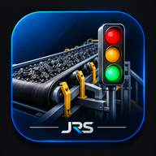

Mapa das Correias
ACESSO PAUSADO
O app e o Mapa de faróis estão temporariamente fora do ar.
Os dados já registrados estão guardados. Assim que o acesso for liberado, é só abrir de novo.

O app e o Mapa de faróis estão temporariamente fora do ar.
Os dados já registrados estão guardados. Assim que o acesso for liberado, é só abrir de novo.